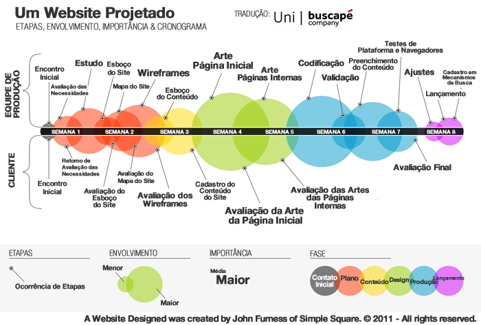

Projeto de desenvolvimento de um website: Portifólio
Se você realmente quer fazer um site incrível, é preciso uma compreensão íntima dos fundamentos do design, entender conceitos básicos e estabelecer um planejamento adequado.
A primeira coisa a se fazer ao inciar um projeto e definir as etapas, envolvimento e cronograma.
A imagem a seguir, criada por John Furness, do Simple Square, ilustra os detalhes do processo de criação e implementação de um Website de média complexidade, podendo variar de acordo com as funcionalidades requeridas pelo cliente.

Entenda e visualize com facilidade todas as etapas com nível de envolvimento e importância necessárias para o desenvolvimento de um projeto de Website. As principais fases foram divididas por cores, tamanho dos círculos significa envolvimento e tamanho de fonte, importância.
SEMANA 1
O nosso ponto de partida é o encontro inicial com o cliente, no qual apuramos as necessidades e discutimos as possíveis soluções e viabilidades. Este encontro é fundamental para definir um norte para o projeto.
Ainda na primeira semana, é realizado um estudo acerca do que foi pedido x o que é necessário x o que pode ser feito. Neste estudo são levantadas as informações pertinentes ao panorama de mercado do cliente, o que os seus concorrentes diretos estão fazendo, o que o seu cliente está buscando e o que a sua empresa pode oferecer em produtos, serviços e/ ou soluções.
Feito isso, apresentamos um plano de comunicação para a avaliação do cliente e posterior feedback com ajustes. É o esboço do site.
SEMANA 2
A partir da segunda semana se dá início ao mapa do site. Nele está contida a representação hierárquica da estrutura de um site, composta por páginas Web. O passo seguinte é o esboço do Wireframe, ou seja, um guia visual básico para sugerir a estrutura do site e a relação entre as páginas nele contidas. Nesta etapa do processo contamos com a participação ativa do cliente nos passando um feedback sobre o que foi apresentando.
SEMANA 3
Já na terceira semana é realizado o esboço de conteúdo e cadastro de conteúdo do site. Nesta fase é iniciada a produção do conteúdo que irá preencher o site com informações. O conteúdo é um dos principais pilares para originar bons resultados em número de visitas, Leads e vendas. Identificar quais conteúdos devem ser produzidos, para quem, em que quantidade e periodicidade, é um trabalho complexo e deve ser feito de forma certeira e assertiva.
SEMANA 4
A arte da página inicial começa a ser desenvolvida na quarta semana. A partir das informações coletadas com o cliente, em conformidade com as cores da empresa, empregando a psicologia das cores e outras metodologias. Aqui iniciamos o processo que dará a “cara para o seu site”. O cliente avalia o resultado inicial e faz as suas considerações e/ou correções.
SEMANA 5
A próxima etapa acontece na quinta semana de desenvolvimento, em que será realizada a arte das páginas internas, passando pelo mesmo processo empregado na arte da página inicial.
SEMANA 6
Na sexta semana entraremos no processo de Codificação e Validação. O primeiro consiste na geração do código fonte, ou seja, escrever o código de programa em alguma linguagem de programação para que o sistema execute o que está sendo pedido. São instruções fornecidas ao sistema. Já a validação é um conjunto de testes realizados com várias ferramentas que asseguram o bom funcionamento do site, navegabilidade, acessibilidade e funcionalidade. A homologação confere integridade ao sistema, garantindo que ele esteja em pleno funcionamento, livre de erros e em ambiente seguro.
SEMANA 7
A sétima semana compreende a fase de conclusão do site, em que será feito o preenchimento de conteúdo que foi produzido anteriormente e, em paralelo, serão realizados os testes de plataformas e navegadores para assegurar que todo o conteúdo seja exibido corretamente e que todas as ferramentas cumpram com a funcionalidade proposta. É nesta fase também que o cliente realiza a avaliação final.
SEMANA 8
Na oitava e última semana, entramos na etapa de finalização do Website que, a esta altura, estará prestes a “nascer”. Nesta etapa, igualmente importante, são realizados os ajustes finais e possíveis correções necessárias para realizar o lançamento do site na Web e efetivar o cadastro nos mecanismos de busca. A partir daí a sua empresa, produto ou serviço já poderá ser encontrada pelo público alvo.
A execução de todas as etapas descritas acima acontecem em sinergia com o cliente, pois acreditamos que a soma de todo o esforço envolvido em conjunto durante o processo de criação do Website, resulta na garantia de uma parceria de sucesso e nos permite alcançar o nosso principal objetivo, que é o de superar as expectativas.
Projeto: Website Portifólio
Iremos aqui criar um plano de desenvolvimento de site adaptado ao nosso projeto e na nossa realidade.
Vamos seguir aqui o passo a passo do processo de desenvolvimento e criação, que ocorrerá ao longo de 5 semanas, até o “nascimento” do Website.
Iremos dividir o projeto em 6 processos:
Requisitos de Software
Design de Software
Construção do Software (implementação)
Teste de Sofware
Implantação
Manutenção de Software
Cada processo conterá atividades, tarefas a serem realizadas. Idealizaremos 5 semanas para o projeto.
- SEMANA 1 - Requisitos de Software
- SEMANA 2 - Design de Software
- SEMANA 3 e 4 - Construção do Software
- SEMANA 5 - Teste
- SEMANA 5 - Implantação
SEMANA 1 - Requisitos de Software
- Encontro inicial com o cliente
- Engenharia de requisitos (Estudo da viabilidade, Elicitação dos requisitos, Especificação de requisitos, Validação dos requisitos)
- Criação do plano de desenvolvimento de software
- Criação do documento de requisitos
SEMANA 2 Design de Software
- Arquitetura dom sistema (projetar a solução do software)
- Modelagem do sistema
- Criação de cenários de teste de aceitação
- Criação do plano de desenvolvimento de software
- Criação do documento de requisitos
- Ferramenta de desenvolvimento
- Engenharia de configurações - Gerenciamento de configurações (controle de mudanças, gerenciamento de versões, Integração contínua (teste e qualidade - TDD Test Driven Development ou Desenvolvimento Baseado em Testes - Refatoração ) Criação do documento do design do sistema para o programador
SEMANA 3 e 4 Construção do Software
- Criação dos cenários de testes do sistema
- Codificação Front End (Elaboração da arte da página principal)
- Codificação Front End (Elaboração da arte da página principal)
- Codificação Front End (Elaboração das páginas internas)
- Codificação Back End (Elaboração do código e do banco de dados)
- Teste de unidade e de integração
- Implantação contínua Entregável: partes do software
SEMANA 5 Teste
- Testes de unidade
- Teste de integração
- Teste de aceitação
- ...
SEMANA 5 Implantação
- Diagrama da implantação
- Avaliação final do cliente
- Aditivos ou alterações
- Avaliação da usabilidade pelos usuários
- Ajustes finais
- Manual do usuário do software
- Documentação
O conhecimento em design é inspirado no livro The Web Designer's Roadmap de Giovanni DeFeterici .